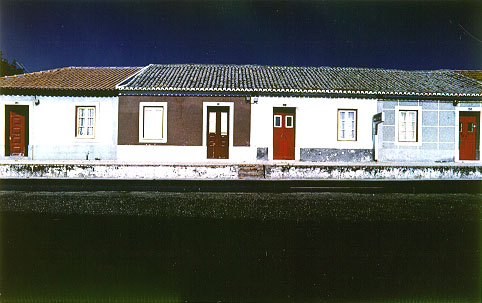

義助慰安婦 —— 李敖百件珍藏義賣藝術品（第54件） 品 名：E4. 柯錫杰〈葡萄牙房子〉 預估價：15 萬 成交價：15 萬 說 明： 這幅作品是當年李敖和胡茵夢結婚時，中國時報發行人余紀忠先生送的賀禮。在柯錫杰《給我一個家》攝影集裡也收印同樣的一幅，但柯先生說這張照片再也沖洗不出來了，因為柯達公司已沒有這種技術了，所以全世界只有這一絕版了。 
這幅作品是當年李敖和胡茵夢結婚時，中國時報發行人余紀忠先生送的賀禮。在柯錫杰《給我一個家》攝影集裡也收印同樣的一幅，但柯先生說這張照片再也沖洗不出來了，因為柯達公司已沒有這種技術了，所以全世界只有這一絕版了。